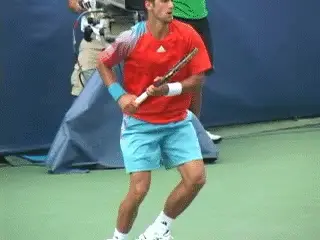
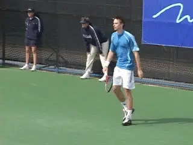
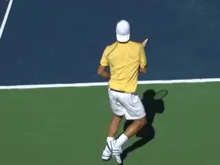
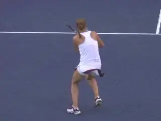
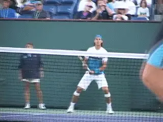

The Dangers of Strong Emotion¶
By Allen Fox, Ph.D.¶

Are strong emotions useful in winning tennis matches?
What do strong emotions do to your tennis game? Many people think that it's useful to get hyped-up and emotional in order to play their best tennis. It seems to help Rafael Nadal and Maria Sharapova, and it didn't stop John McEnroe and Jimmy Connors from collecting a boat-load of major championships. (Although it didn't do McEnroe much good in the French Open final when he led Ivan Lendl two sets to none, went ballistic over some small issue, and blew the match.) But most people will find that experiencing strong emotion during match play is disruptive. Why?
First, let's consider at a little deeper level how trained tennis players hit their beautifully coordinated shots. Tennis is largely a game of habit and reflex. And practice is mostly a matter of motor learning. Through countless hours of repetition players program in patterns of nerve responses that drive the muscles to hit the various strokes and react properly to the multitude of different on-court situations.
When they get into competitive match there is no time to think during points. They simply want their complex and carefully programmed responses to come out properly without conscious thought. In fact, events unfold during points too fast for conscious thought to effectively control their actions. They simply and instantaneously respond with their habits and reflexes to whatever situation that presents itself.

Emotion can disrupt your habits and reflexes leading to errors.
When you have very strong emotion it tends to disrupt this finely tuned nervous system of yours, and you tend to make mistakes. The process is so subtle that you might not notice it. For example, you may lose an important point on what you consider to be a silly error. The natural response is to immediately react emotionally. You get a flash of disappointment and anger.
\"How the Hell could I miss such an easy shot?\" you think to yourself. You have the urge to fling your racket into the back fence, but you resist. You wanted that point. You needed that point, and you gave it away. This is justification for at least a brief shot of anger in any man's (or woman's) book. But you pull yourself together before the next point starts, and you think you are ok.
But you're not quite. You've actually kicked the nervous system around a bit. A shot of adrenaline and other stress hormones are coursing through your blood stream and bathing your nervous system. Under this influence, the nervous circuitry will behave slightly differently. So even though you think you are on balance for the next point, you're really not quite. Although it's hardly noticeable, most people will tend to make a few more errors under these circumstances.

You may think you're back on balance after an outburst, but you're not.
When I coached at Pepperdine and watched players that I knew well play hundreds of matches, I was able to detect a subtle pattern. When my player was reacting with strong emotion after points he became more likely to make mistakes at crucial times, even though he was able to calm himself before beginning the next point. This became most evident if the set went to a tie-breaker. If my guy had been cool and collected throughout the set, he tended to win more than his share of the tie-breakers. If he hadn't, he tended to make that extra error or two that did him in.
It was subtle, but I observed this pattern emerge over and over. When I talked with my player after the match and asked how he felt during the breaker he usually said he felt fine. He said he wasn't angry nor did he feel unusually stressed, but the results told a different story. The conclusion was clear to me - it's best to keep your emotions on balance and cool so you don't disrupt your game and lose those few extra points that cost you matches.

Too much emotion can be the difference in matches settled by a handful of total points.
Close tennis matches are settled by very few points. In a 6-4 or a 7-5 set the difference between the losing player and the winning player is, on the average, only 3 or 4 points. This means that if you give your opponent one extra point every other game you will end up on the losing end of a 7-5 set rather than the winning end. And the difference (other than the outcome) is so slight that you will never even realize what happened.
You may think that missing an extra shot or two only hurts you if it happens on a big point. \"Sure,\" you think, \"If I throw away a point on game point or set point it will obviously hurt me. But otherwise I can make up for it by winning the game, and it doesn't matter whether I won the game at love or at fifteen.\" That's a nice theory, but it doesn't hold in the real world of competitive match play. All points can make a difference. The problem is that you don't really know, during match play, which points will decisively impact the match until the match is over.

Playing a tough return point at 30 love might end up being the difference.
For example, everybody knows that set points or break points are big points, but most people would not think that the 30-love point on your opponent's serve is a big point. With this attitude they might play that point carelessly by going for a big return or some other low-percentage shot. They miss, and it's now 40-love.
From here it is very likely they will lose the game. But since they already thought the game was in trouble they take no particular notice when they lose it. They don't think they did anything wrong. But realize that if they had played a tough point at 30-0, it could now be 30-15, one point away from deuce. When you think about it, there is an obvious and huge difference between 40-0 and 30-15. At 30-15, deuce is only one point away and a service break becomes a looming possibility. What seemed at the time to be a small, expendable point can end up being a turning point in the game and match.
On the other hand, if you throw that 30-0 point away with a careless, low-percentage play and get down 40-0, the game is very likely to be lost. You would never give a second thought to the small point you let go and would never realize why you lost the set. That's the reason why the great competitors like Nadal and Sharapova give 100% on every point, figuring they are all important.
And that is the point about strong emotions. By jangling our nervous systems just slightly out of kilter, they cause us to make a few extra errors. And these silently and unobtrusively do us in.
This article is excerpted from Allen's new book, Tennis: Winning the Mental Match, which will be available at the end of 2010 on Amazon and on Allen's new website, www.allenfoxtennis.net.
Read More From Allen!
Visit him at www.allenfoxtennis.net
|  | Tennis is mentally the most difficult sport due to it's personal nature which makes winning and losing feel more |
| important than they are. In this new book, Allen offers his proven solutions to problems such as choking, reducing | |
| stress, finishing matches, and developing confidence. Based on a life time of high level play and coaching success, | |
| it's a must for all competitive players. | |
| [ to | |
| Order](http://www.amazon.com/Tennis-Winning-Mental-Allen-Fox/dp/0615407765/ref=sr_1_1?ie=UTF8&qid=1336083459&sr=8-1). |
|  | eminently preferable to losing. In his new book, The |
| Winner's Mind, Allen lays out an original step-by-step | |
| plan for succeeding at any of life's endeavors, based on | |
| his first hand and very personal observations of the | |
| careers of both world-class tennis players and successful | |
| businessman. The bottom line is that even if you are not a | |
| born champion--and only a tiny percentage of us are--you | |
| can still use the success strategies of champions to tilt | |
| the odds in your favor. Writing with brutal honesty and dry | |
| humor, Fox lays out the common mental characteristics of | |
| winners in sports and in life. He explains the critical | |
| role of intellect over emotion. He analyzes the struggle | |
| between ambition and fear and the insidious and pervasive | |
| fear of failure that undermines so many of us. He then | |
| outline how to confront and overcome these fears in your | |
| life and career, even when they are initially subconscious. | |
| Must reading from one of the great thinkers in tennis, and | |
| a Renaissance Man in life. [ to | |
| Order](http://www.tennis-warehouse.com/descpage-MIND.html). | |
| To purchase this book you can also send a check for \$17.95 | |
| to Allen Fox, 1120 Inverness Place, San Luis Obispo, CA. | |
| 93401. The price includes shipping. |
|  | insightful analysts in modern tennis. A top 10 |
| American player from the glory days before Open | |
| tennis, Fox played many of the legendary greats, among | |
| them Roy Emerson, Rod Laver, Stan Smith, and Arthur | |
| Ashe. At Pepperdine he developed the men's tennis | |
| program into an elite contender for national titles, | |
| and gave Brad Gilbert the insights that became the | |
| foundation for \"Winning Ugly\". His book Think to Win | |
| is a modern classic. He has also starred in a series | |
| of acclaimed videos, including Pro Secrets of Match | |
| Play and Allen Fox's Ultimate Tennis Lesson. | |